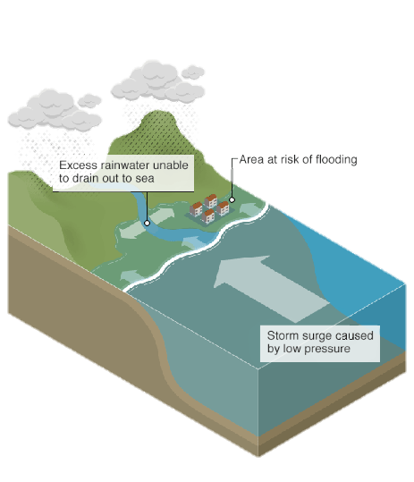
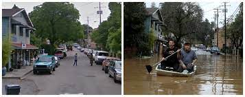
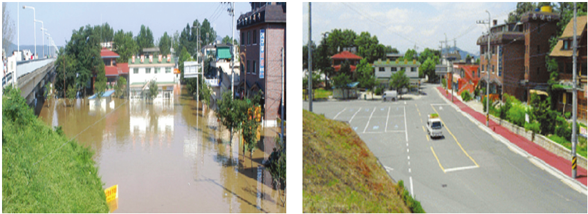

Floods
• A flood occurs when a sudden influx of water submerges land area causing danger to the life and property of the people living there.
• People living in low lying areas in the river basin suffered the most.
• • the loss of life and property is considerable some time the fertile topsoil is removed by the fast-flowing water leaving the land infertile(not suitable for growing crops).
• The Brahmaputra , Ganga, Yamuna, Mahanadi and the river in Punjab are notorious for their flood.
• A flood is an overflow of water (or rarely other fluids) that submerges land that is usually dry. In the sense of "flowing water", the word may also be applied to the inflow of the tide.
Out Of The Book
• Floods, according to National Geographic, cause about $6 billion worth of damage and kill nearly 140 people every year in the US.
• Six inches of fast-moving water is enough to knock a person down. Don’t try to walk through flood waters. Often the water is much deeper than you know and could contain dangerous debris or contaminants.
Before And After Effects Of Earthquakes
• 66% of flood-related deaths are due to drivers attempting to drive through water that is too deep. Never try to drive through water when you don’t know how deep it is. 12 inches of water is enough to sweep away a small car and two feet of water can sweep away most vehicles.
• New land development can increase the risk of flooding. New construction can change the natural runoff patterns of an area. When building or buying a home, be aware of this fact. Prepare and be proactive, talk to your builder or neighbor and mitigate the effects. Land that hasn’t flooded in the past may be at higher risk after new construction takes place.
Before And After Effects Of Earthquakes
• Everyone has the potential to experience a flood. According to the Federal Emergency Management Agency (FEMA), over 25 percent of the National Flood Insurance Program’s (NFIP) flood insurance claims are for structures outside high-risk floodplains. Everyone in the nation is at risk of flooding, no matter if they are in a floodplain or not.
• Flood insurance is separate from Homeowners Insurance. Even if you have homeowner’s insurance, you are not covered for flood damage unless you have a Flood Policy as well. Make sure you’re covered. Communicate with your insurance agent and know your policy. Learn more about flood insurance on our Flood Insurance page
Flood Zones In India

Some of the major floods occurred in India are the flood of 6 September 1970 on the Narmada River and the flood of 11 August 1979 on the Machhu River.
Preparedness Against Floods
Steps that can be useful in minimizing the damage from an floods are:-
• Find out what your flood risk is.
• Avoid building in a flood prone area unless you elevate and reinforce your home.
• Make an emergency plan to protect you, your family and your pets.
• You should be familiar with the train in order to quickly reach the safer places in case of flood.
• electric mains must be switched off to avoid short current.
• the government must ensure the high impact among rivers and maintain the good conditions because it often cause flash floods.
• Avoid snapped wires
• Keep track of the warnings and should keep nearby radio and keep a track of mass media and sufficient essential supplies of food water and medicines.
• The government should also ensure that facilities for quick evacuation of people and animals to makeshift shelters located at higher places are ready.
• Rescue equipment such as boats and ropes and means of communication should be kept ready.